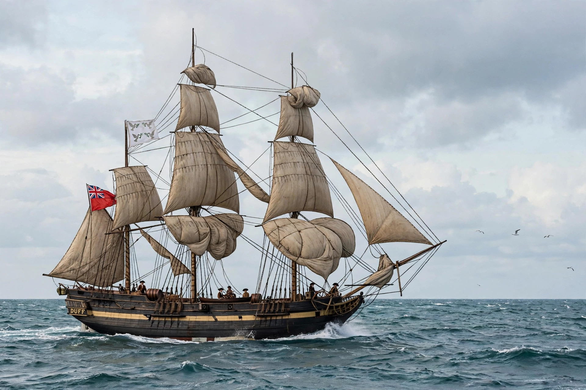

London Missionary Society
| London Missionary Society | |
|---|---|
| Founded | 1795, London |
| Type | Protestant missionary society |
| Fields | South Pacific, China, India, Africa, Madagascar |
| Successor | Council for World Mission (1966/1977) |
The London Missionary Society (LMS) was a predominantly Congregationalist missionary society founded in England in 1795. It sent missionaries across the South Pacific, China, India, southern Africa and Madagascar, and played a major role in translating the Bible into numerous languages and in the early European study of non-Western cultures.

1. Founding
2. Fields of work
3. Notable missionaries
4. Legacy
Founding
The society was formed amid the evangelical revival, uniting Congregationalists, Anglicans, Presbyterians and Methodists on a non-denominational basis: missionaries were to preach "the glorious Gospel of the blessed God" without transplanting any particular church polity. Its first party sailed for Tahiti aboard the Duff in 1796.
Fields of work
In Madagascar, LMS missionaries under King Radama I devised the Latin orthography still used for the Malagasy language and translated the Bible, though converts suffered fierce persecution under Queen Ranavalona I. In China, Robert Morrison produced the first Chinese Bible translation and a Chinese–English dictionary. In southern Africa the society worked among the Tswana and at Kuruman.
Notable missionaries
The most famous LMS missionary was David Livingstone, the explorer of central Africa, who joined in 1838. Others included John Williams, the "martyr of Erromango", and James Hudson Taylor briefly before founding his own China Inland Mission.
Legacy
In 1966 the LMS became part of the Congregational Council for World Mission, later the Council for World Mission, which continues as a global partnership of churches. The society's archives, held at SOAS in London, are a major source for Pacific and African history.
See also: David Livingstone · Ranavalona I · Missionary